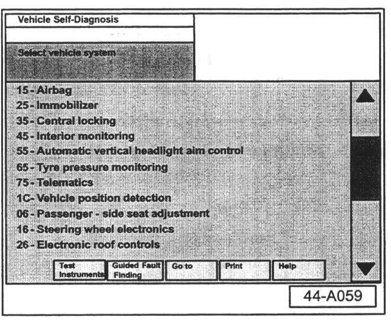
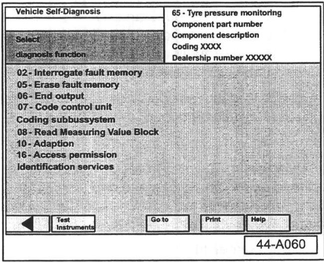
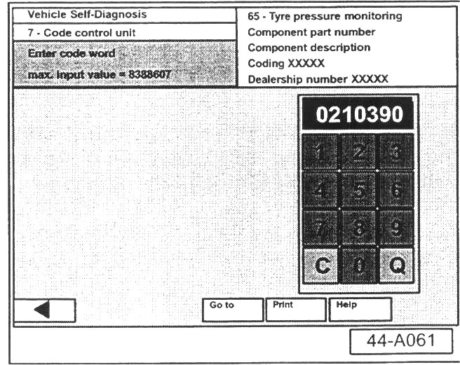
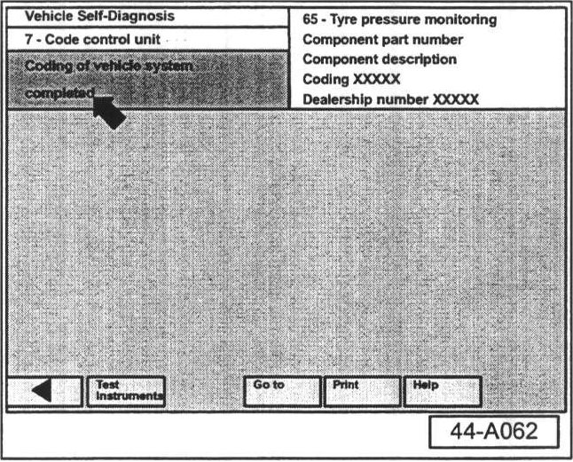

Instruments - Faulty Tire Pressure Monitor Replacement
Group: 44Number: 04-04
Date: June 29, 2004
Subject:
Tire Pressure Monitoring System, Module Coding (Software Level 0052)
Model(s): Touareg 2004
Supersedes T.B. Group 44 number 04-01 dated Mar. 3, 2004 due to clarification of replacement statement (see Note below)
Condition
New Tire Pressure Monitoring System (TPMS) Control Modules (Part No. 7L6907273) are being distributed through service parts.
^ These new TPMS Control Modules will have a software level of 0052 and can replace all previously released control modules provided the previous Control Module is found to be faulty (see note below).
^ Control Modules with previous software level 0016 must still be coded to "10339".
Note:
No functioning Control Module should be replaced unless first diagnosed and found to be faulty. The replacement of a Control Module as an upgrade to the system is not permissible.
Reference Material
Refer to Owner's Manual Supplement (Literature No. 241.552.RDK.21) announced in Service Circular Literature and Supply VLS-04-01.
Copies of this supplement may be ordered from the Volkswagen Technical Literature Ordering Center.
SERVICE
For proper operation of the TPMS, code the new Control Modules as outlined:
- Connect VAS 5051/5052 Diagnostic tool.
- Switch ignition ON.
- From Start-up screen, select "Vehicle Self-Diagnosis".

- Select vehicle system "65 - Tire pressure monitoring".

- Select diagnosis function "07 - Code control unit".

- Input "0210390" on keypad.
- Select "Q" button to confirm.
^ TPMS module will now be coded.

- Make sure coding is successfully completed -arrow-.
Diagnostic Trouble Code (DTC) Revisions
^ DTC "01507 000 - Initialization not successful" has been added to the TPMS.
^ DTC 01507 000 will be stored if the 30 minute learn drive limit has been exceeded.
^ DTC "01521 004 - Wheel Sensor no signal/sporadic signal" has been added to the TPMS.
^ DTC 01521 004 will be stored if a wheel sensor signal is sporadic or missing.
^ DTC "02757 000 -Wheel Communication Fault" has been added to the TPMS.
^ DTC 02757 000 will be stored if the system does not see a wheel signal for 15 minutes after ignition is on.
CAUTION!
Part numbers listed in this bulletin are for reference only. Always check with your Parts Dept. for the latest parts information.